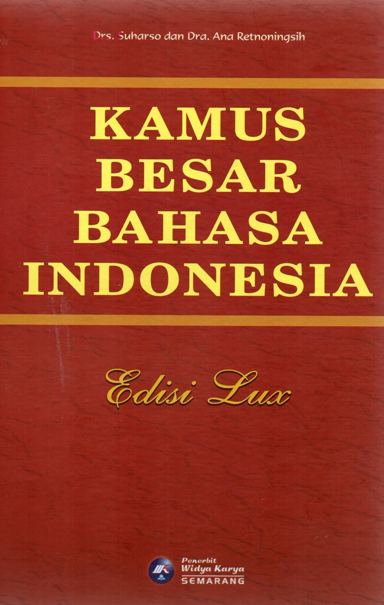
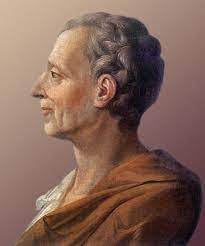
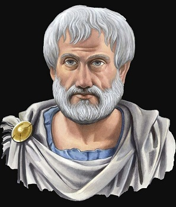

PENGERTIAN
|
Sumber: www.fahum.umsu.ac.id Demokrasi adalah sistem pemerintahan yang memberikan hak dan kebebasan kepada rakyat untuk turut serta dalam pengambilan keputusan. Demokrasi berasal dari bahasa Yunani, demos yang berarti rakyat atau khalayak, dan kratos yang artinya pemerintahan. Dalam demokrasi, kekuasaan ada di tangan rakyat, dan rakyat memiliki hak untuk memilih pemimpin dan mengontrol pemerintahan. Beberapa ciri-ciri demokrasi antara lain adanya pemilihan umum, kebebasan pers, hak asasi manusia, dan kebebasan berpendapat. Demokrasi juga memiliki berbagai jenis, seperti demokrasi langsung, demokrasi representatif, dan demokrasi parlementer. |
|
Oxford English Dictionary Sumber: www.amazon.com Demokrasi adalah pemerintahan oleh rakyat; bentuk pemerintahannya terletak pada kedaulatan rakyat secara menyeluruh, dan dijalankan secara langsung oleh rakyat, atau oleh pejabat yang dipilih oleh rakyat. |
Kamus Besar Bahasa Indonesia  Sumber: www.gramedia.com Demokrasi adalah pemerintahan rakyat atau bentuk atau sistem pemerintahan yang seluruh rakyatnya turut serta memerintah dengan perantara wakilnya. |
|
Montesquieu  Sumber: www.kompasiana.com Kekuasaan negara harus dibagi dan dilaksanakan oleh tiga lembaga atau institusi yang berbeda dan terpisah satu sama lainnya, yaitu pertama, legislatif yang merupakan pemegang kekuasaan untuk membuat undang-undang, kedua, eksekutif yang memiliki kekuasaan dalam melaksanakan undang-undang, dan ketiga adalah yudikatif, yang memegang kekuasaan untuk mengadili pelaksanaan undang-undang. Masing-masing institusi tersebut berdiri secara independen tanpa dipengaruhi oleh institusi lainnya. |
Aristoteles  Sumber: www.suarahkbp.com Demokrasi menurut Aristoteles adalah sebuah kebebasan setiap warga negara.
Kebebasan tersebut digunakan untuk saling berbagi kekuasaan. |
John Espocito Sumber: www.us-iran.org Pada sistem demokrasi semua orang berhak berpartisipasi,
baik terlibat aktif maupun mengontrol kebijakan yang dikeluarkan oleh pemerintah.
Selain itu, tentu saja dalam lembaga resmi
pemerintah terdapat pemisahan yang jelas antara unsur eksekutif, legislatif, maupun yudikatif. |